O círculo cromático
Dentro da teoria das cores, precisamos separá-las em grupos para que possamos decidir se as escolhas que vamos fazer para o nosso site vão fazer um sentido harmônico e para que os nossos visitantes olhem para o nosso projeto e instintivamente pense: “- nossa, que bonito!”. A base para isso é conhecer o círculo cromático e compreender as suas sub-divisões. E ele está logo aí abaixo, olhe atentamente, se possível para uma versão colorida. Se por acaso você está vendo uma versão impressa em preto-e-branco, acesse agora o meu repositório e veja o PDF diretamente na tela do seu computador ou celular. Vai ficar tudo mais claro pra você, pode acreditar!

Analisando atentamente o círculo cromático, percebemos as três cores primárias, que estão destacadas com o texto mais escuro: amarelo, vermelho e azul. Da junção das cores primárias, temos as três cores secundárias, que são o laranja (amarelo+vermelho), o violeta/roxo (azul+vermelho) e o verde (azul+amarelo). Da junção de uma cor primária com uma secundária, temos as seis cores terciárias: ‣ Amarelo-esverdeado (amarelo+verde) ‣ Amarelo-alaranjado (amarelo+laranja) ‣ Vermelho-alaranjado (vermelho+laranja) ‣ Vermelho-arroxeado (vermelho+roxo) ‣ Azul-arroxeado (azul+roxo) ‣ Azul-esverdeado (azul+verde)
Temperatura e Harmonia Olhando o círculo cromático, também conseguimos classificar as cores por sua temperatura. Dá só uma olhada na imagem a seguir:
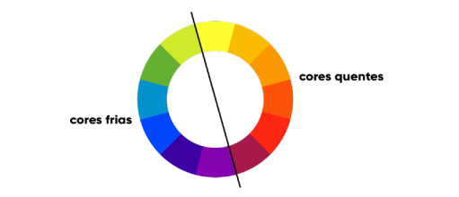
As cores quentes, criam uma sensação de calor e proximidade. Já as cores frias, estão associadas a sensações mais calmas, de frescor e tranquilidade. Além da classificação por temperatura, podemos classificar as cores por esquemas harmônicos.
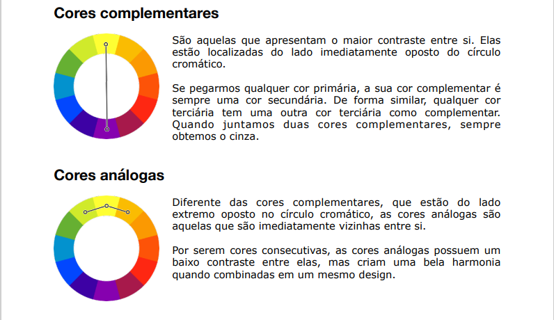
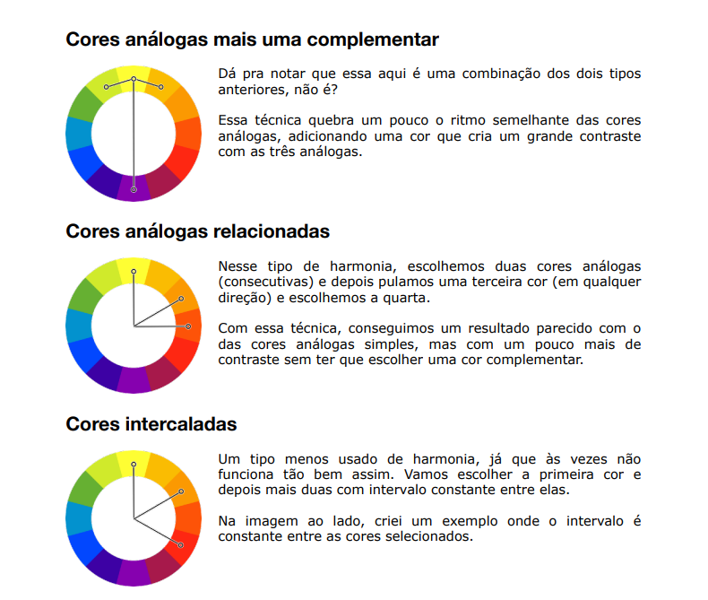
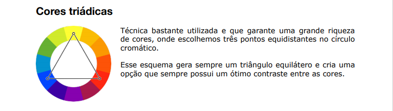
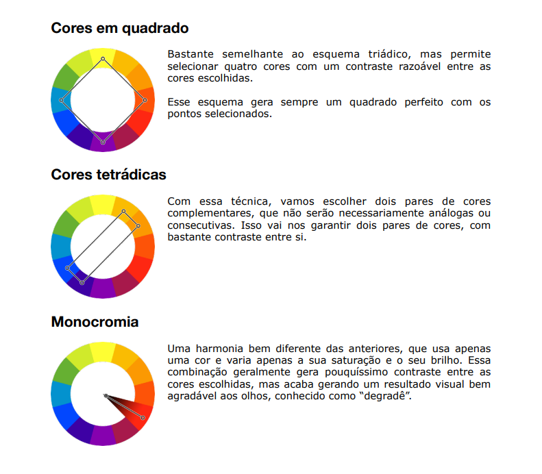
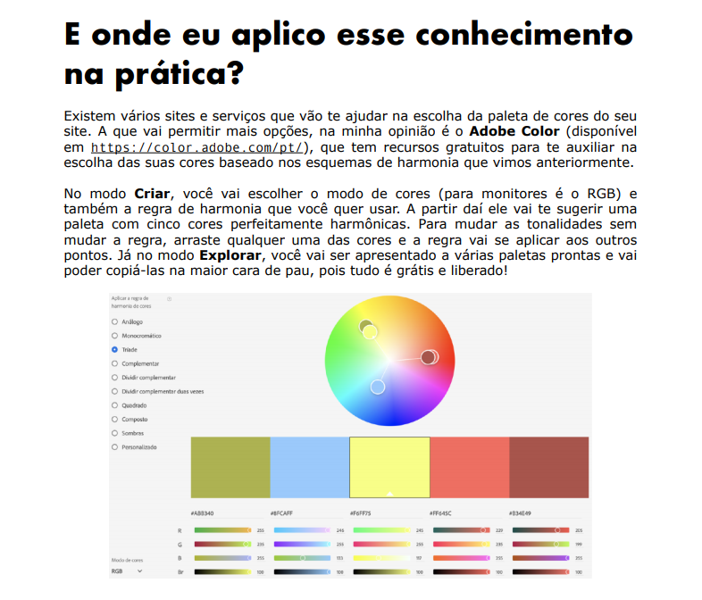
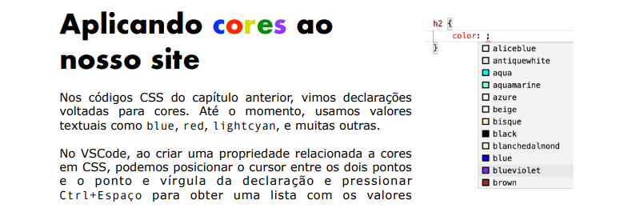
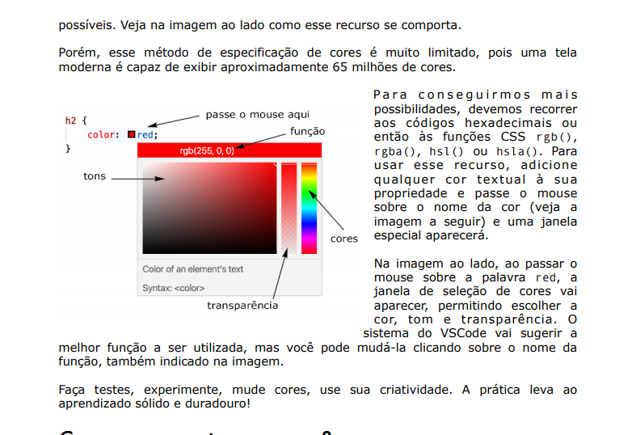
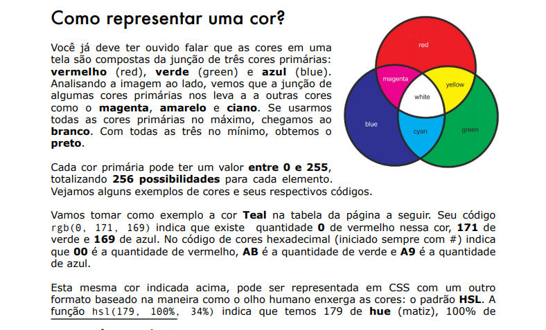
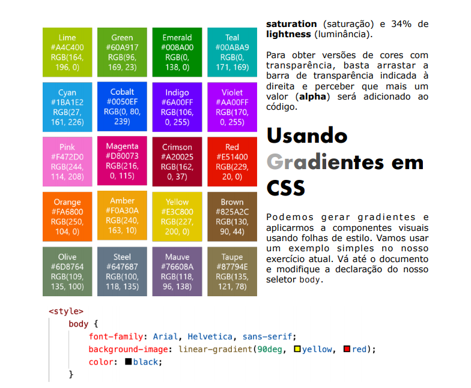
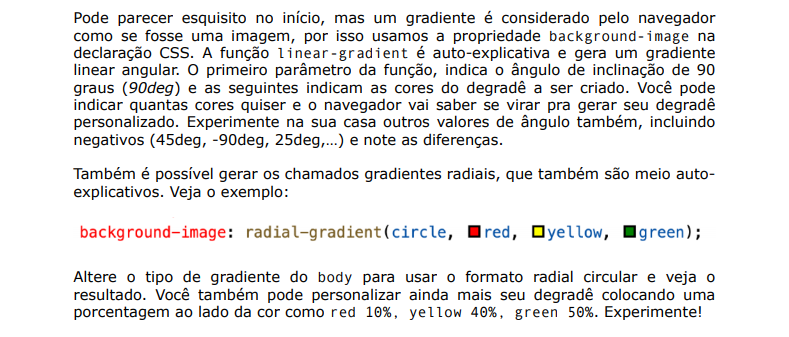